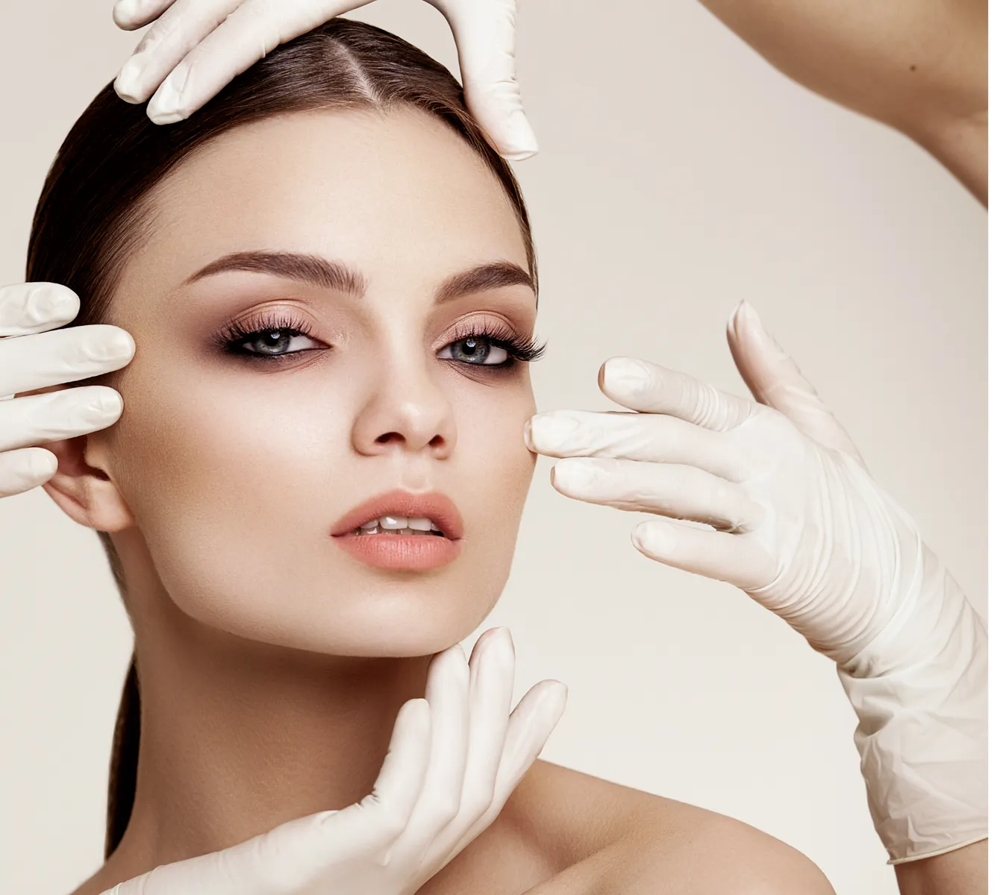
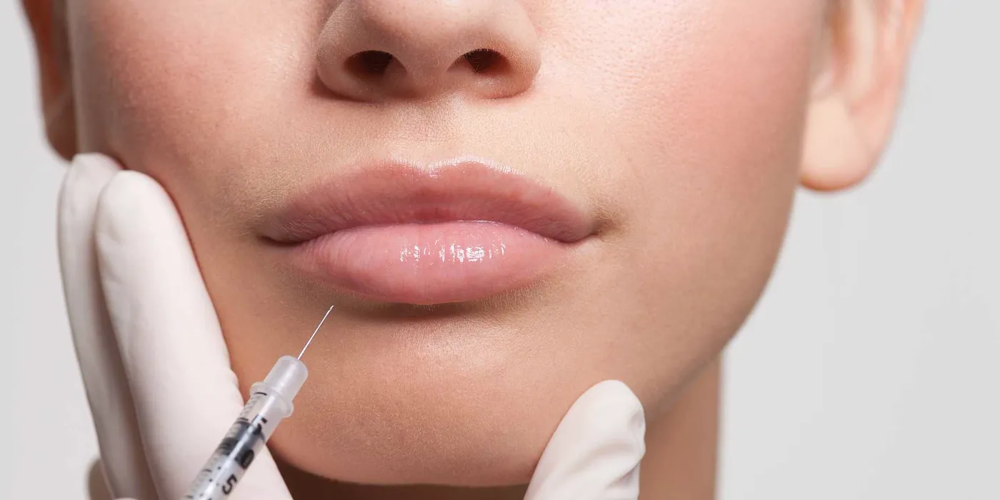
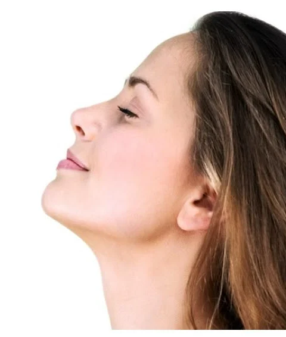
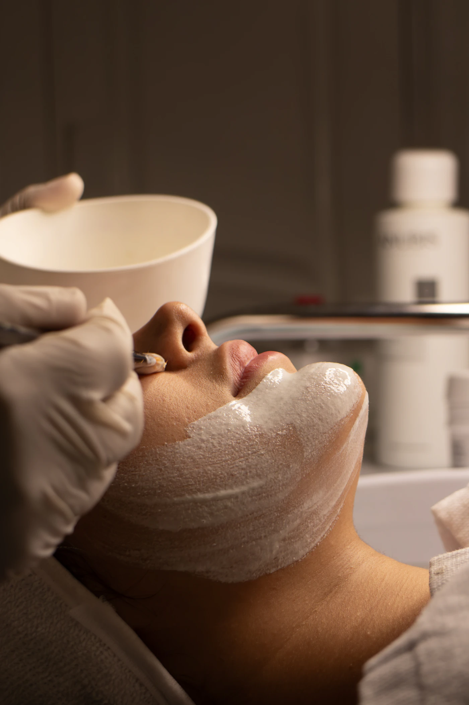
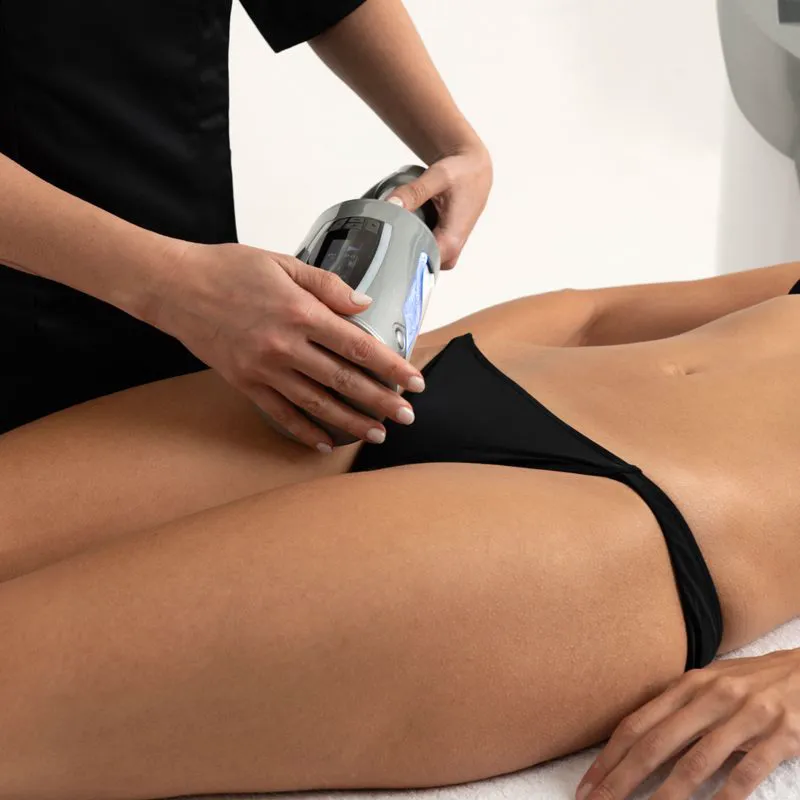
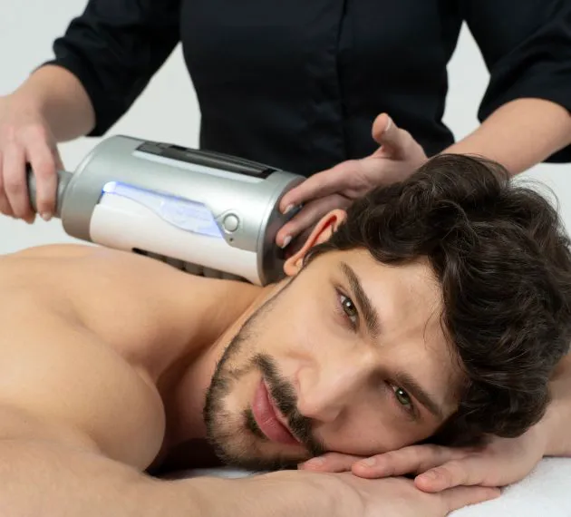

Thornhill · Bathurst & Steeles
Beauty Medical Clinic Non-surgical anti-aging, where art meets science.
Botox, fillers, skin renewal, spider veins, body contouring and hair restoration, every treatment performed by Registered Nurse Rebecca Victoria Adam, who teaches these techniques to doctors and nurses.
- 30+years in medicine
- RNCertified Advanced Cosmetic Injector
- Rated “Excellent” · 40 Google reviews
Our philosophy
Thirty years of medicine and an artist’s eye, for results that still look like you.
Rebecca’s reputation rests on natural, youthful results built on anatomy, science and an artist’s eye. Clients say she would rather under-treat than over-treat, and every plan begins with a pressure-free conversation.
Meet RebeccaThe face map
Find your treatment, area by area.
Tap a point on the face, or choose an area below, to see what Rebecca uses to treat it.
01 / 12
Hair & scalp
Thinning, shedding, a widening part
06 / 12
Cheeks & midface
Lost volume, flattened cheekbones

Tap a point · see what treats it
Treatments
Fifteen treatments, one trusted pair of hands.
From a ten-minute Botox appointment to a six-week skin-tightening course, each plan is built around your face, your goals and what will look natural on you.
 01 · InjectablesBotox & DysportSoftens frown lines, forehead lines and crow’s feet. About 10 minutes, no downtime.Learn more
01 · InjectablesBotox & DysportSoftens frown lines, forehead lines and crow’s feet. About 10 minutes, no downtime.Learn more
 02 · InjectablesDermal FillersHyaluronic acid to restore volume and sculpt cheeks, chin, jaw and folds. Results right away.Learn more
02 · InjectablesDermal FillersHyaluronic acid to restore volume and sculpt cheeks, chin, jaw and folds. Results right away.Learn more

03 · InjectablesLip FillersA conservative, natural plump with reversible hyaluronic acid. Lasts about 6–12 months.Learn more 04 · InjectablesCinderella Facelift & LipsA saline “try before you buy” plump for lips or cheeks that lasts one evening.Learn more 05 · InjectablesSkin BoostersMicro-injections of hyaluronic acid that hydrate skin from within. Face, neck, hands.Learn more
05 · InjectablesSkin BoostersMicro-injections of hyaluronic acid that hydrate skin from within. Face, neck, hands.Learn more
 06 · Skin renewalMicroneedlingCollagen induction for acne scars, pores, stretch marks and fine lines.Learn more
06 · Skin renewalMicroneedlingCollagen induction for acne scars, pores, stretch marks and fine lines.Learn more

07 · Skin renewalPRP RejuvenationYour own platelets for tone, texture, dark circles, the neck and hair.Learn more 08 · Skin renewalMesotherapyA vitamin and hyaluronic acid cocktail for dull, tired skin, finished with red LED.Learn more
08 · Skin renewalMesotherapyA vitamin and hyaluronic acid cocktail for dull, tired skin, finished with red LED.Learn more
 09 · Skin renewalOrganic Herbal PeelA plant-based peel for sun damage, acne, scars and uneven tone.Learn more
09 · Skin renewalOrganic Herbal PeelA plant-based peel for sun damage, acne, scars and uneven tone.Learn more

10 · Skin renewalSalt & Silk FacialA luxurious saline-and-silk ritual with radio frequency and jawline contouring.Learn more 11 · Skin renewalForma RF Skin TighteningRadio frequency that tightens the jawline, brow and neck with no downtime.Learn more
11 · Skin renewalForma RF Skin TighteningRadio frequency that tightens the jawline, brow and neck with no downtime.Learn more
 12 · Body & veinsSclerotherapy (Spider Veins)Clears spider and small leg veins. Compression stockings fitted in-clinic.Learn more
13 · Body & veinsBody FX Body ContouringRadio frequency and vacuum for stubborn fat and cellulite. Zero downtime.Learn more
12 · Body & veinsSclerotherapy (Spider Veins)Clears spider and small leg veins. Compression stockings fitted in-clinic.Learn more
13 · Body & veinsBody FX Body ContouringRadio frequency and vacuum for stubborn fat and cellulite. Zero downtime.Learn more

14 · Body & veinsEndospheres TherapyItalian microvibration for cellulite, puffiness, tension and a lifted face.Learn more 15 · HairHair Loss & Thinning TreatmentThe clinic’s own PRP + mesotherapy protocol. First results in 2–3 months.Learn moreMost requested
The treatments people travel for.

New from ItalyEndospheres body & faceCompressive microvibration for cellulite, fluid retention, muscle tension and a lifted contour.Learn more One of the first in TorontoCinderella facelift & lipsA one-evening saline plump for weddings, parties and photos, or to try a look before filler.Learn moreMeet your injector
A nurse first. An artist always.
Rebecca began her career as a Registered Nurse on a bone-marrow transplant unit at one of Israel’s leading hospitals, then worked as a wound-care nurse and educator for Johnson & Johnson. In Canada she re-qualified as an RN and spent several years as a visiting nurse before moving into medical aesthetics, where she trained alongside leading dermatologists and plastic surgeons.
Today she is one of Canada’s sought-after aesthetics trainers. For more than ten years she has taught hands-on Botox, dermal filler and sclerotherapy technique to doctors and registered nurses, and hundreds of professionals from Australia, Europe and North America have learned from her.
Art is her second passion. A multidisciplinary artist, Rebecca brings the same eye for harmony and natural beauty to every face she treats.
- 30+ yrsin medicine
- 10+ yrstraining MDs & RNs
- 100sof professionals taught worldwide
Real clients · real results
Before & after, from the clinic’s own files.
Every photo below is a Beauty Medical Clinic client, from the clinic’s own records. Results vary from person to person.


Rated “Excellent” on Google · 40 reviews
“Would not trust anyone else with my face.”
She fixed my spider veins. She is a miracle worker! Extremely meticulous, professional and experienced… She prefers to under-treat rather than over-treat and I really appreciate her honesty.
My favourite procedure was the Hydro Facial + Forma — the results were IMMEDIATE and the following day I went out without any makeup and received compliments even from strangers!
I’ve had spider veins which bothered me for years. Thanks to Victoria, we are approaching the final result. Victoria is a very professional and caring specialist.
Victoria is a highly professional and gifted practitioner. She is honest, caring, and will always do her absolute best to give you what you are looking for.
Incredible service, true master of her craft. Victoria is attentive, knowledgeable and very professional.
I had my spider veins removed by Victoria. She did an amazing job! She is very skilled and attentive.
Excellent professional service. I felt like I was in good hands the whole time and I couldn’t be happier with my experience.
Victoria is the best! Exceptionally good service, truly caring for her clients.
The difference
What makes Beauty Medical Clinic different.
“The goal is to age as gracefully as possible. If you start investing early enough, we can help you delay the ageing process, and that’s something each of us deserves.”
Rebecca Victoria Adam
- 01Relationships built on trust and honesty
- 02Compassion and empathy
- 03Medical professionalism
- 04An individual approach for every face
- 05A friendly, pressure-free atmosphere
Questions
Good to know before your first visit.
More detail lives on each treatment page, including preparation and aftercare.
Who performs the treatments?
Rebecca Victoria Adam, a Registered Nurse and Certified Advanced Cosmetic Injector with more than 30 years in medicine. She also trains doctors and nurses in Botox, dermal fillers and sclerotherapy.
Where is Beauty Medical Clinic?
In the Medical Arts building at 7131 Bathurst St., Unit 103, Thornhill, ON L4J 7Z1, near Steeles Ave and Bathurst St.
How do I book?
Call or text 416-728-5697, message on WhatsApp, email info@beautymedicalclinic.com, or send the request form on the contact page.
How long does Botox last?
Usually three to five months. Results start within a few days and peak at about two weeks.
Will I look “done”?
No. Rebecca’s reputation rests on natural, youthful results. Clients often mention that she prefers to under-treat rather than over-treat.
What is the best age to start?
There is no upper limit, and treatments are for adults 18 and over. Starting a maintenance plan earlier makes results easier to keep later.
Do you treat men?
Yes. Rebecca helps both women and men, and treatments like Endospheres, Botox and the hair-loss protocol are popular with men.
Visit the clinic
Bathurst & Steeles, in the Medical Arts building.
- Address
- Medical Arts building
7131 Bathurst St., Unit 103
Thornhill, ON L4J 7Z1 - Phone & text
- 416-728-5697
- Message us